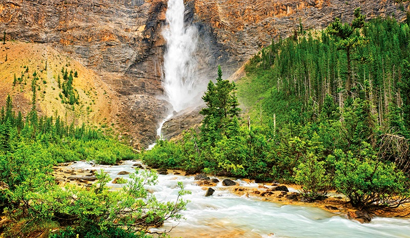
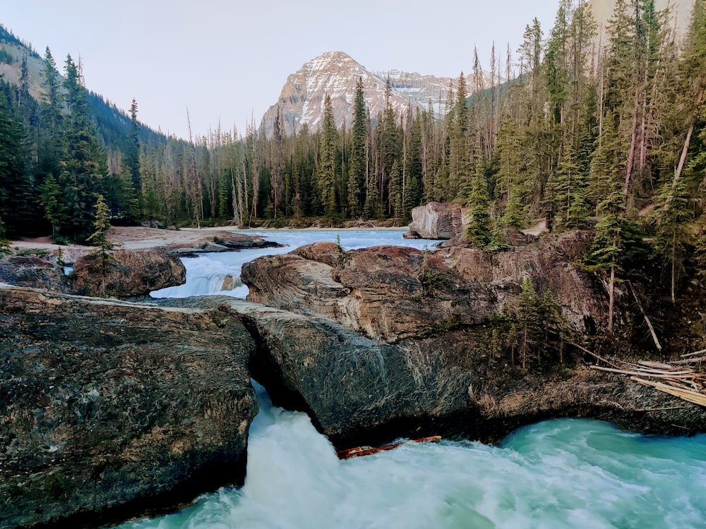

Yoho National Park, located in British Columbia, Canada, is a haven for nature enthusiasts. Spanning an area of approximately 1,313 square kilometers (507 square miles), this pristine national park is celebrated for its rugged mountain landscapes, breathtaking waterfalls, and abundant wildlife.
Trivia and Important Timeline
1886 - Yoho National Park is established, making it one of Canada's oldest national parks.
1909 - The completion of the Spiral Tunnels on the Canadian Pacific Railway enhances access to the park.
1984 - Yoho National Park is designated as a UNESCO World Heritage Site, recognizing its natural and cultural significance.
2011 - The Burgess Shale fossil beds within the park gain UNESCO World Heritage status for their exceptional preservation of prehistoric life.
What to Expect?
Yoho National Park offers a wide range of outdoor activities and opportunities to connect with nature. You can embark on thrilling hiking adventures through stunning mountain terrain, marvel at powerful waterfalls such as Takakkaw Falls and Wapta Falls, and enjoy birdwatching and wildlife viewing opportunities. In the winter months, the park transforms into a snowy wonderland, perfect for skiing and snowshoeing.
"In the heart of Yoho, where nature's wonders unfold at every turn."
Top Attractions in Yoho National Park
Emerald Lake

Takakaw Falls
Lake O'hara

Natural Bridge
Takakkaw Falls - Witness the majesty of Takakkaw Falls, one of Canada's highest waterfalls.
Approx. 20 minutes (12 km) from Yoho National Park's Field Visitor Centre.
Emerald Lake - Explore the stunning Emerald Lake, known for its vibrant turquoise waters and scenic hiking trails.
Approx. 15 minutes (10 km) from Yoho National Park's Field Visitor Centre.
Natural Bridge - Visit the remarkable Natural Bridge formation, sculpted by the powerful Kicking Horse River.
Approx. 10 minutes (9 km) from Yoho National Park's Field Visitor Centre.
Wapta Falls - Discover Wapta Falls, a breathtaking waterfall surrounded by lush forest.
Approx. 25 minutes (23 km) from Yoho National Park's Field Visitor Centre.
Burgess Shale Fossils - Explore the fascinating world of Burgess Shale fossils through guided hikes.
Various locations with guided tours from Yoho National Park's Field Visitor Centre.
Activities in Yoho National Park
Yoho National Park offers a plethora of activities for outdoor enthusiasts. Immerse yourself in the natural beauty of the Canadian Rockies, observe diverse wildlife, and experience stargazing in the park's Dark Sky Preserve. Whether you enjoy serene lake explorations, biking adventures, or water activities like kayaking and fishing, Yoho National Park has something to offer.
Hiking
Yoho National Park boasts a variety of hiking trails suitable for all skill levels. From easy walks to challenging alpine hikes, the park offers stunning scenery, waterfalls, and remarkable viewpoints.
Iceline Trail - Moderate to Strenuous - A high-alpine hike offering panoramic views of glaciers and waterfalls - Approx. 20 km
Official Site - Experience the beauty of glaciers and waterfalls.
Yoho Lake Trail - Easy to Moderate - Hike to the tranquil Yoho Lake surrounded by lush forest - Approx. 9.2 km
Official Site - Enjoy the serenity of Yoho Lake.
Biking
Discover Yoho National Park's magnificent landscapes on your bicycle. With trails suitable for cyclists of all skill levels, the park offers memorable biking experiences, from leisurely rides through serene forests to challenging routes with breathtaking mountain views.
Kicking Horse Trail - Moderate - A scenic trail along the Kicking Horse River with stunning mountain vistas - Approx. 21 km
Official Site - Enjoy a picturesque ride along the Kicking Horse River.
Camping
Experience the beauty of Yoho National Park by camping amidst its pristine wilderness. From riverside campsites to forested locations, the park offers various camping options to suit your preferences. Here are some top camping sites to consider:
Kicking Horse Campground
Monarch Campground
Kicking Horse Campground - Riverside camping with picturesque views.
Description: Kicking Horse Campground offers a tranquil setting along the Kicking Horse River and is an excellent base for exploring the park.
Facilities: Amenities include flush toilets, showers, fire pits, picnic tables, and an amphitheater for interpretive programs.
Approximate Fee Per Day: $27.40 - $31.50 CAD
Official Site - Check for current fees and availability.
Monarch Campground - Riverside camping in a peaceful forested area.
Description: Monarch Campground offers a serene atmosphere by the Kicking Horse River, perfect for relaxation and wildlife watching.
Facilities: Facilities include pit toilets, picnic tables, and fire pits.
Approximate Fee Per Day: $21.50 - $23.50 CAD
Official Site - Find details on campground fees and availability.
FYI: Camping fees can vary depending on the season, so it's advisable to plan ahead and check the official Parks Canada - Yoho National Park website for the most up-to-date information on campsite fees and availability.